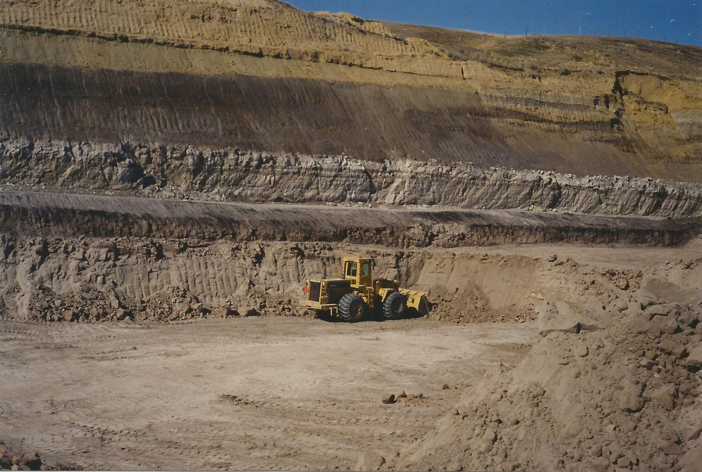
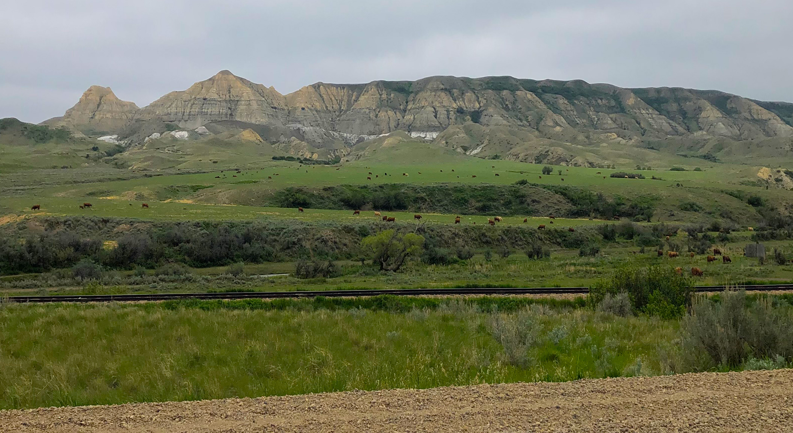
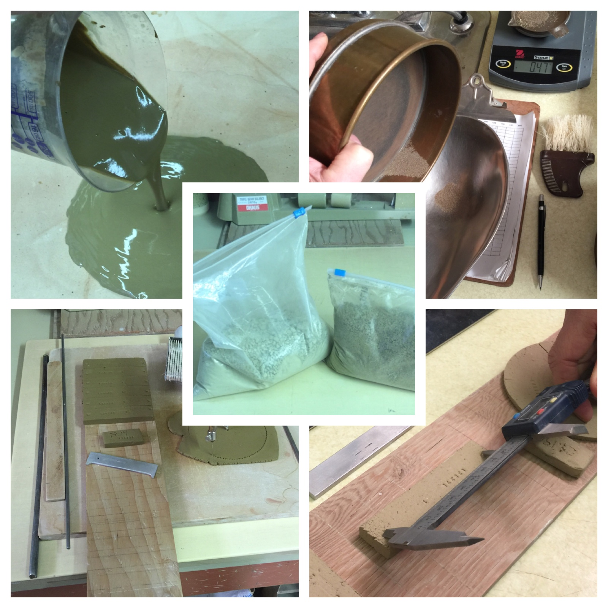
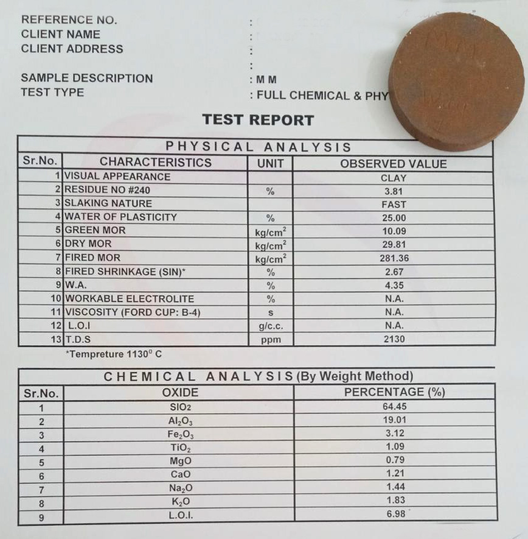
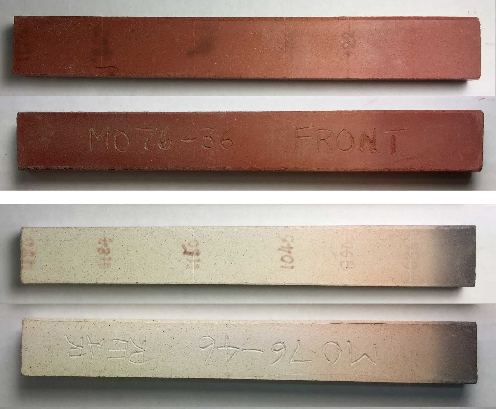
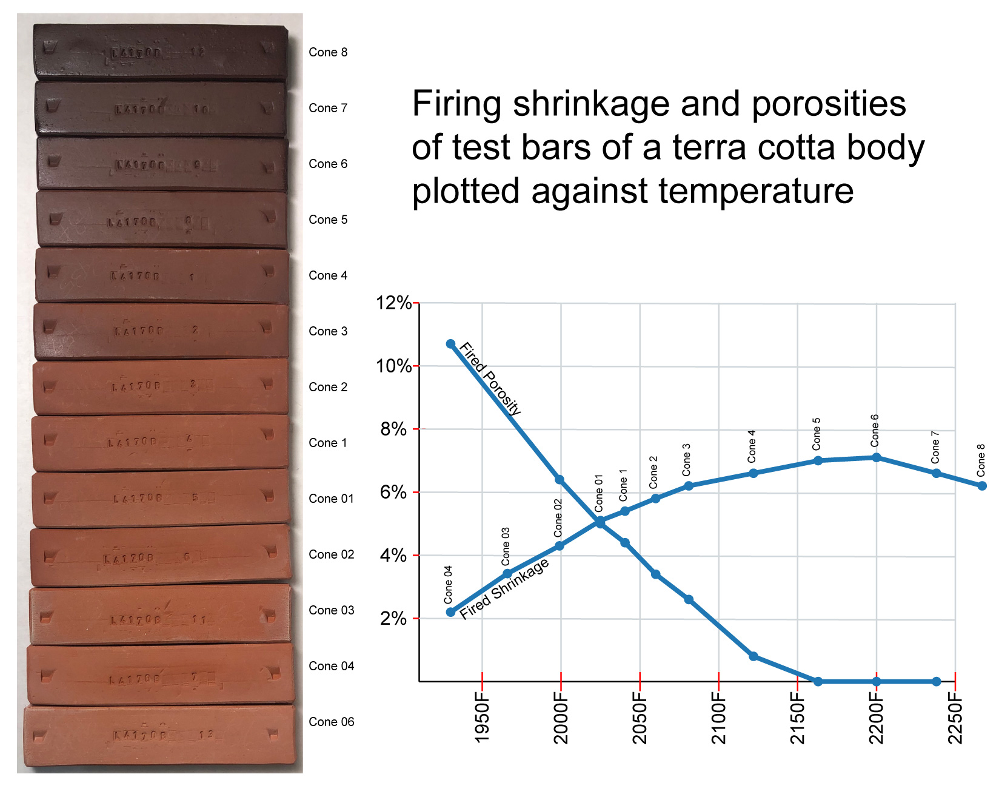
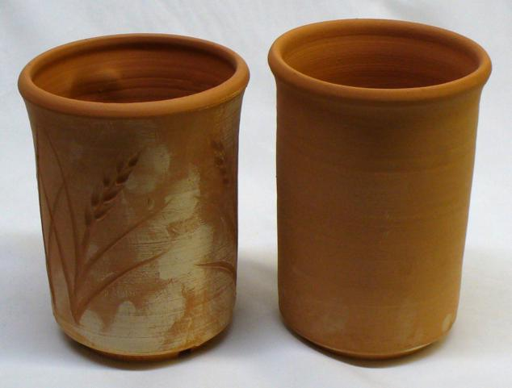
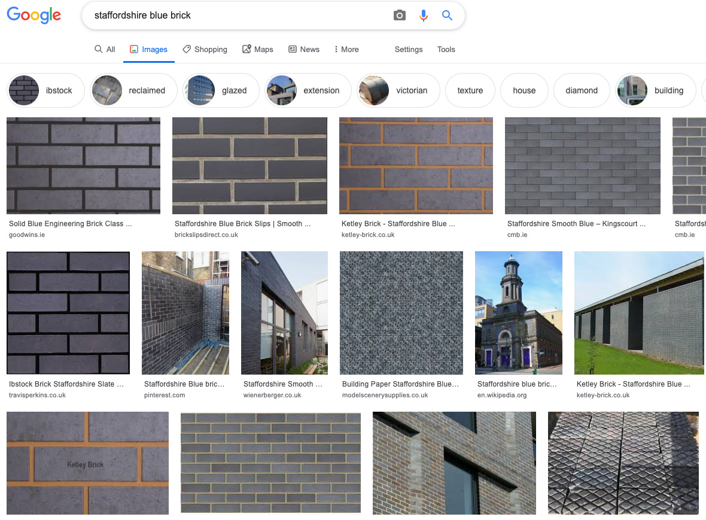
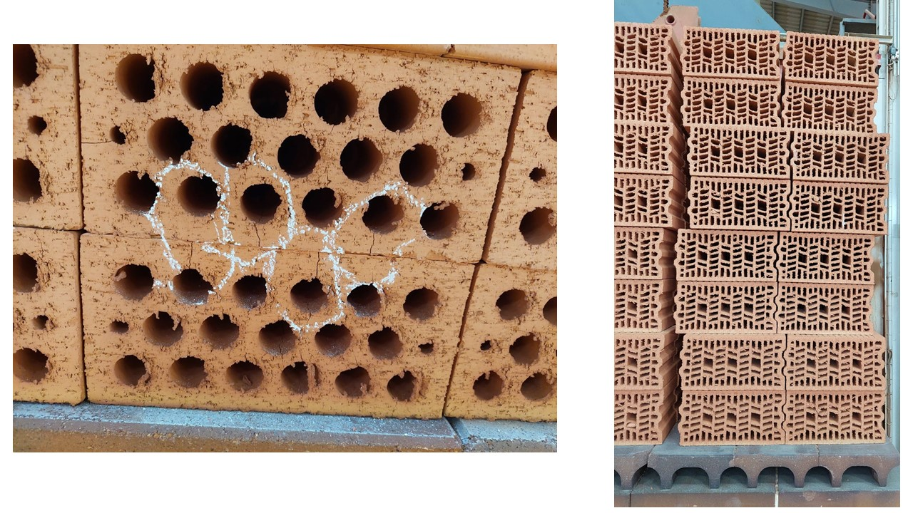

Brick Making
Brick-making is surprisingly demanding. Materials blending and processing, forming, drying and firing heavy and thick objects as fast as possible are like no other ceramic manufacturing challenge.
Key phrases linking here: brick making - Learn more
Details
In many places, brick and pottery industries developed together. The pottery producers refined the clays much more and did more select mining. Both industries need plastic clays, but extruded brick producers add aggregate (called grog) and sand to improve water permeability, reduce drying and firing shrinkage. Pressed brickmakers thrive on fine-grained silty clays but can also tolerate plastic materials. Both industries use terms like stoneware, terra cotta, fireclay, ball clay, kaolin. Potters judge raw clay properties by how the materials feel and work on the wheel whereas brickmakers are interested in how clays work in their machines and driers. Potters get clays that fit their process whereas brick manufacturers must adapt to the local clays available.
The viability of brick manufacture is thus dependent on the availability of a local clay of good plasticity (so it can be formed effectively). That being said, rarely would one plastic clay be suitable for brick all by itself, it is always best to have a suite of clays that includes whites, browns and reds, plastic and non-plastics, low and high fire, and smooth and sandy. Depending on the diversity of their properties clays from further afield might be needed (e.g. color).
Minimizing energy usage is of course a priority everywhere now. The availability of plastic terra cotta and feldspathic silts make brick manufacture at lower temperatures much more viable, albeit of darker colors. However, engobes can be tuned to dry and fire-fit any body - that enables brick of almost any color. In areas where energy is less expensive lower iron stoneware clays can be employed to make light-burning bricks as high as cone 10. High temperatures are very practical when the bricks can withstand fast firing without fracture.
Comparative rather than absolute determination of material and recipe properties is most practical. When clay recipes work well these provide benchmark properties against which others can be compared. For example, consider a clay that is not doing what is needed: A comparison in properties between it and adjustment #1 informs one of the direction needed for adjustment #2.
If you are tasked with formulating bodies for brick the first step is to comparatively characterize all the clays available (note that we use the term characterization in a more practical sense than numbers on data sheets). For example, which is the most plastic one, fires to most maturity, burns darkest, dries best, is the most consistent, grinds easiest, etc. Ideally, the most available clays should make up the bulk of recipes with others added to achieve the needed color, density and strength. Each clay sources a mix of properties. Recipes made from them are thus mixes of mixes. Individual clays can be seen as having a principle property needed and bringing along “the baggage” of other properties that also enhance the mix or, conversely, require dilution, process compensation or just toleration.
The principal enabler of effective brick production is good drying capacity and a source of inexpensive materials enabling making recipes having the right balance of water permeability and plastic strength for the forming machines. The bricks must be completely dried at temperatures above boiling point for an extended period to remove absolutely all of the mechanical water. These simple factors make it possible to fire bricks quickly (even very quickly to high temperatures).
Properties:
Plasticity: Potters recognize plasticity as the ability to pull a thin-walled tall vase on the wheel. It is also very important for extruded brick. Clays must still retain enough plasticity to extrude from the nose of a pugmill without peeling despite being very stiff and containing a high percentage of grog. Like pottery, body plasticity can be achieved by mixing smaller percentages of highly plastic clays with larger percentages of non-plastic silts (or vice versa). The more plastic a clay the slower it dries and the more expensive it is to dry (for grinding powder and drying bricks) it in production. Most brick clay recipes, if ground finer and minus the grog, would work well for pottery and sculpture as is. Plasticity is not measured, it’s presence or absence is simply noted in body performance.
Dry shrinkage: Needs to be minimized. A stuff pug of 4-5% would be typical. The more plastic a clay the more the drying shrinkage. Higher drying shrinkage generally means more cracking. The SHAB test is good for measuring this.
Dry strength: The more plastic a clay the higher its dry strength. Clays of high dry strength can tolerate some uneven drying even though shrinkage is higher. Although expensive equipment is available for measuring tensile strength it is surprising how practical it is to assess comparative strength by simply breaking test bars by hand.
PSD: The distribution of particle sizes is important for dust-pressed brick in order to achieve the maximum density. The ease with which grinding equipment (e.g. dry pan) can reduce particle size is also important for pugmill efficiency. PSD testing of dry powders is normally done in a sieve shaker.
Soluble salts content: These cause efflorescence (white scum on the fired surface). The salts must be precipitated by barium carbonate additions (terra cottas are worst for this). The higher the salts the more barium is needed (high salt content disqualifies many clays for use in brick).
Maturity: Clays exhibit a range of fired properties that progresses with temperature increase. For example, with increased temperature color changes, brick size decreases, matrix density increases, gases of decomposition burn off, warping begins and accelerates, thermal expansion changes, quartz inversion passes, etc. A brick lab will typically have a storage area of thousands of fired gradient bars, color-against-temperature tiles, DTA curves. In some clays, these properties may gradually change over a wide range of temperatures, in others an arithmetic progression suddenly changes to geometric as a specific temperature passes.
Compressive strength: With brick, this property is obviously important. It is a direct consequence of fired maturity. However, clays get stronger with higher firing temperatures until a tipping point is reached after which it rapidly decreases (this point also sees rapid changes in color, surface character, gas generation, bloating, shrinkage reversal). Density produces higher strength - dense clays have low porosity and absorb minimal water. In climates with freeze-thaw cycles brick density is very important.
Related Information
IXL Industries clay quarry near Ravenscrag, Saskatchewan in 1984.

This picture has its own page with more detail, click here to see it.
Layers of the Whitemud Formation are being mined. The layer being extracted is a silty stoneware they referred to as the "D member" (equivalent to Plainsman PR3D which is mined several miles to the east for use in pottery). It was great for bricks because it dried quickly and had minimal drying shrinkage. Below the D they continued to mine a much whiter kaolinized sand of equal or more thickness. Above the D is a ball clay (equivalent to Plainsman A2). Above that is a light-burning stoneware (the combined layers that Plainsman extracts separately as A3 and 3B). A foot-thick layer of much harder volcanic ash is visible in the green overburden at the top. From these stoneware clays they extruded brick of exceptional quality, firing it as high as cone 10. Twenty years later, the company reclaimed this land - today you would be unable to find where it was located.
Outcrops of the Whitemud formation in the Eastend river valley - 2021

This picture has its own page with more detail, click here to see it.
In the spring this is what you will see to the north (near Ravenscrag, Saskatchewan on the south road to Eastend). The Whitemud clays are clearly visible. The amount of overburden makes it difficult to find minable sections, so Plainsman Clays mines on the opposite side where gently rolling hills fall to the valley bottom. On that side there are no outcrops, these white layers are largely hidden and can only be discovered by exploratory digging. But on this side they are easily accessed and can readily be sampled. This is the exact location where the Whitemud clays were first discovered for pottery in the early 1900s, there are actually some mineable sections on the front hills to left. I-XL brick mined clay here for many years. This is also the site of a mine for the former Medalta Potteries.
Testing your own native clays is easier than you think

This picture has its own page with more detail, click here to see it.
Some simple equipment is all you need. You can do practical tests to characterize a local clay in your own studio or workshop (e.g. our SHAB test, DFAC test, SIEV test, LDW test). You need a gram scale (preferably accurate to 0.01g) and a set of callipers (check Amazon.com). Some metal sieves (search "Tyler Sieves" on Ebay). A stamp to mark samples with code and specimen numbers. A plaster table or slab. A propeller mixer. And, of course, a test kiln. And you need a place to put all the measurement data collected and learn from it (e.g. an account at insight-live.com).
A typical clay lab report:
Is this really what you need?

This picture has its own page with more detail, click here to see it.
If you are trying to use local clays for brick, tile or even pottery production, characterizing the available materials is the first step. But how? This is the kind of data a lab might return - perhaps you wonder about its value? We feel traditional ceramics technology is fundamentally a relative science. A history of many reports like these, in context with other data, might be good for mining companies to determine if new stockpiles have any shifts in certain specific properties. Or a tile company evaluating a new ball clay. But as a way to understand the utility of a clay for a specific ceramic purpose, this contextless report is of little use. For example, the physical properties, the whole reason for using a clay, are unrelated to the chemistry. This is also a tunnel vision view, looking at only one temperature. On the other hand, simple procedures, like the SHAB test, provide a hands-on way to understand what a clay actually is.
Gradient test bars show how a range of temperatures affects a clay

This picture has its own page with more detail, click here to see it.
These are the fronts and backs of dust-pressed and fired gradient bars. They were done by Luke Lindoe in the I-XL brick lab to assess the firing history on two clay samples from Montana. After final drying, the bar width at each line is carefully recorded. They are fired horizontally in a furnace capable of reproducing linear thermal gradients along the length of the bar (equally spaced thermocouples enable control in each micro-zone). After firing, the widths are re-measured. The data produces a graph of fired shrinkage vs. temperature. Bars can also be visually inspected side-by-side for differences (color being the most obvious but also surface character). This method of comparatively assessing the effect of temperature on a clay test bar is popular in the brick industry (e.g. when a new mining of clay is being compared with a previous one). However, the SHAB test, although requiring more effort, provides more information and is more accurate (e.g. for pottery and porcelain).
How to decide what temperature to fire this clay at?

This picture has its own page with more detail, click here to see it.
This is an extreme example of firing a clay at many temperatures to get wide-angle view of it. These SHAB test bars characterize a terra cotta body, L4170B. While it has a wide firing range its "practical firing window" is much narrower than these fired bars and graph suggest. On paper, cone 5 hits zero porosity. And, in-hand, the bar feels like a porcelain. But ware warps during firing and transparent glazes will be completely clouded with bubbles (when pieces are glazed inside and out). What about cone 3? Its numbers put it in stoneware territory, watertight. But decomposition gases still bubble glazes! Cone 2? Much better, it has below 4% porosity (any fitted glaze will make it water-tight), below 6% fired shrinkage, still very strong. But there are still issues: Accidental overfiring drastically darkens the color. Low-fire commercial glazes may not work at cone 2. How about cone 02? This is a sweet spot. This body has only 6% porosity (compared to the 11% of cone 04). Most low-fire cone 06-04 glazes are still fine at cone 02. And glaze bubble-clouding is minimal. What if you must fire this at cone 04? Pieces will be "sponges" with 11% porosity, shrinking only 2% (for low density, poor strength). There is another advantage of firing as high as possible: Glazes and engobes bond better. As an example of a low-fire transparent base that works fine on this up to cone 2: G1916Q.
The magic of a small barium carbonate addition to a clay body

This picture has its own page with more detail, click here to see it.
Two bisqued terracotta mugs demonstrate efflorescence. The clay on the right has 0.35% added barium carbonate (it precipitated the natural soluble salts dissolved in the clay and prevented them from coming to the surface with the water and being left there during drying). The process is called efflorescence and is the bane of the brick and terra cotta tile industries. The one on the left is the natural clay. The unsightly appearance is fingerprints from handling the piece in the leather-hard state, the salts have concentrated in these areas (the other piece was also handled).
Blue brick is made by reduction-firing high-iron clays to near vitrification

This picture has its own page with more detail, click here to see it.
A google search for "Staffordshire blue brick" will turn up lots of images and web pages on the topic. Although not really appearing blue on closeup, at a distance the effect is more clear. The clay must have enough iron to both stain it and act as a flux in the reduction kiln atmosphere. The degree of atmospheric consistency inside the kiln will determine the range of colors produced. A potter can achieve this effect by firing a red earthenware in reduction (e.g. to cone 2R), firing a middle-temperature red burning body to cone 6R or adding feldspar to a high temperature reduction red. Additions of iron oxide will enhance the effect, however, thorough testing is needed to achieve the difficult balance of enough iron to get the color but not so much it will over-vitrify and bloat or melt.
Bricks and tiles are cracking out of the kiln. How to solve this problem?

This picture has its own page with more detail, click here to see it.
With data. Consider all the possible reasons. Die design not knitting clay together around floating elements; faulty deairing on the pugmill; clay too short to pug through the complex die, too soft or too stiff, lacks fine particle sizes, lacks dry strength; uneven or incomplete drying; too many sharp concaves or uneven thicknesses on the cross-section; kiln setting does not enable heat exposure to all surfaces; firing too uneven or too fast. Most of these properties can be measured, photographed and logged, and changes will thus be noticed. At a minimum, the SHAB test, LDW test and SIEV test and associated notes and photos will accumulate data to assist. These tiles are being made in the oldest city on earth, from the same clays as ancient Sumerian’s made their ziggurats!
Links
| Articles |
Outdoor Weather Resistant Ceramics
How can you be sure that the porosity of your fired ceramic ware is low enough to prevent freeze-thaw breakdown in the winter? |
| Articles |
Drying Ceramics Without Cracks
Anything ceramic ware can be dried if it is done slowly and evenly enough. To dry faster optimize the body recipe, ware cross section, drying process and develop a good test to rate drying performance. |
| Articles |
Ceramic Tile Clay Body Formulation
An overview of the technical challenges a technician in the tile industry faces in making good tiles from the least expensive materials and process possible. |
| Articles |
Formulating a body using clays native to your area
Being able to mix your own clay body and glaze from native materials might seem ridiculous, yet Covid-19 taught us about the need for independence. |
| Glossary |
Test Kiln
A test kiln is a must for all potters and small manufacturers, even serious hobbyists. Here is why. |
| Glossary |
Sanitary ware
A type of porcelain zircon-glazed ceramic that includes bathtubs, sinks, toilets, etc. |
| URLs |
https://www.ashurbrick.com/
Ashur Brick home page Ashur Brick is located in Ashur, Iraq, the capital of the ancient Assyrian empire. It is the largest single line production plant in Middle East with production capacity of 1,200 tonnes per day. They produce common, hollow and load bearing terra cotta brick. |
| URLs |
https://kannanvk123.wixsite.com/heavyclaytech
Heavy Clay Technologies - Their services for the brick industry include consultation, new plant setup, plant upgrades and optimization, kiln start-ups, troubleshooting/ CAPEX - OPEX - assistance, supply of dies and pressure heads. |
 PayPal | No tracking, No ads, No paywall, No transient content! Just organized, concise information constantly updated and improved. Was this helpful? Consider supporting me. |
| By Tony Hansen Follow me on        |  |
Got a Question?
Buy me a coffee and we can talk 

https://digitalfire.com, All Rights Reserved
Privacy Policy